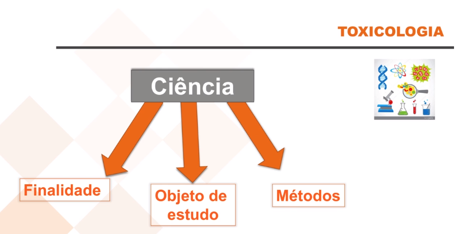
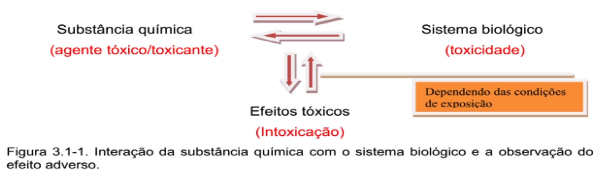
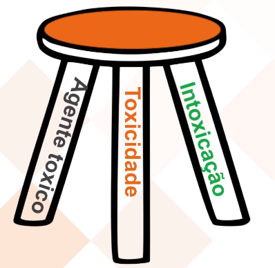
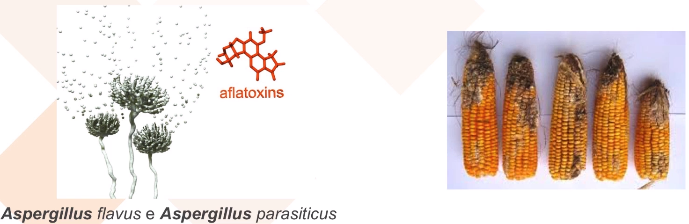
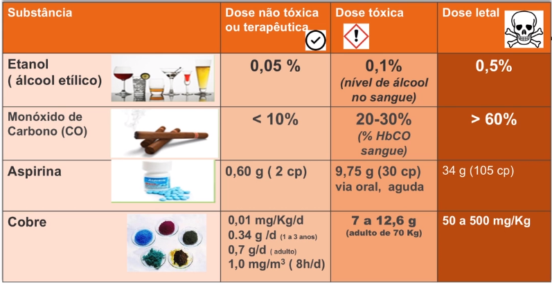

Objetivos da aula
- Explorar os conceitos básicos: toxicologia, agente tóxico, toxicidade
- Diferenciar os termos: agente tóxico, toxina e veneno
- Explicar as Condições e as Características da exposição e como essas condições interferem na expressão da toxicidade
- Abordar os principais fatores intervenientes na expressão da toxicidade que são: Magnitude, duração e frequência de exposição
O que é toxicologia?
- Toxicologia é uma ciência
- Finalidade de estudo
- Objeto de estudo
- Métodos próprios

Objeto de estudo da toxicologia
- O objeto de estudo da toxicologia não é a substância química ou o agente físico propriamente dito, mas sim, em que condições de exposição, essas substâncias ao interagirem com o sistema biológico elas levam ao aparecimento de um efeito tóxico/efeito adverso/efeito deletério

Não existe substância inócua
- Até água mata
- Elevada ingestão de água dilui os eletrólitos no sangue (principalmente sódio)
- Fluidos extracelulares migram para o interior da célula (edema)
- Edema cerebral

- Mesmo substâncias com baixa toxicidade podem levar a um efeito nocivo
Toxicologia
- É a ciência que estuda os efeitos nocivos decorrentes das interações de substâncias químicas/agentes físicos com sistemas biológicos
- Como resultado dessa interação teremos como resultado, a observação do efeito tóxico, dependendo das condições de exposição

Triade clássica
- A tríade clássica que sustenta essa ciência é composta por
- Agente tóxico
- Toxicidade
- Intoxicação
- Estes três princípios são estudados com a finalidade
- Prevenir a intoxicação
- Se a prevenção falhar
- Diagnosticar
- Tratar
- Se a prevenção falhar
- Prevenir a intoxicação

Agente tóxico ou toxicante
- Agente químico ou físico capaz de causar dano a um sistema biológico, alterando seriamente uma função ou levando-o à morte, sob determinadas condições de exposição.
- O que determina o aparecimento do efeito tóxico, como resultado da interação entre a substância química e o sistema biológico são as condições de exposição em que essa interação ocorre
Agente tóxico x toxina x veneno
Toxinas
- Peptídeos e proteínas específicas produzidas por organismos vivos (fungos, bactérias), as quais, em geral, promovem um efeito imediato sobre o receptor
- Exemplo: aflatoxinas produzidas por fungos do gênero Aspergillus que crescem em grãos, dependendo das condições de umidade e temperatura local e podem promover um dano sobre o animal ou sobre o homem que consome esse alimento

Veneno
- É um agente tóxico que altera ou destroi as funções vitais e, segundo alguns autores, o termo é reservado especificamente para designar substâncias provenientes de animais, onde teriam importantes funções de autodefesa ou de predação
- Veneno de cobra, de abelha, de aranha, etc
Toxicidade
- Propriedade inerente a um agente tóxico em promover um efeito deletério no organismo
- Capacidade intrínseca a esse agente tóxico
A expressão da toxicidade depende:
- Condições de exposição
- Comportamento no sistema biológico/ambiente
A expressão da toxicidade depende
- Características/condições da exposição
- Propriedades físico-químicas
- Magnitude, duração e frequência da exposição
- Via de introdução
- Suscetibilidade dos sistemas biológicos
Com relação à magnitude, duração e frequência da exposição, precisamos conceituar dose
Conceito de dose
- Dose é a quantidade total de substância a que o organismo foi/está exposto
“Todas as substâncias são venenos. A dose correta diferencia o veneno do remédio” (Paracelsus, 1493-1541)

Paracelsus
- Para caracterizar a dose de exposição, é necessário conhecer, além da quantidade, a frequência, e a duração da exposição
Exemplos de efeitos tóxicos de substâncias comuns

- O efeito tóxico é função da dose
Exemplo: correlação entre magnitude e duração da exposição ao CO, e efeito tóxico

Aprendemos neste tópico
- Os efeitos tóxicos são objeto de estudo da toxicologia e não a substância química.
- Agente tóxico/toxicante é qualquer substância química ou agente físico capaz de promover um efeito nocivo ao interagir com um sistema biológico, em determinadas condições de exposição.
- Toxicidade é uma propriedade inerente ao toxicante e, se expressa dependendo das condições de exposição e das transformações ocorridas no sistema biológico ou no ambiente.
- Dentre as condições de exposição, a dose é o principal fator interveniente na expressão da toxicidade.
- Dose é a quantidade de substância a que o sistema biológico foi exposto.
- Para caracterizar a dose de exposição, além da quantidade da substância, é necessário conhecer a frequência e duração.